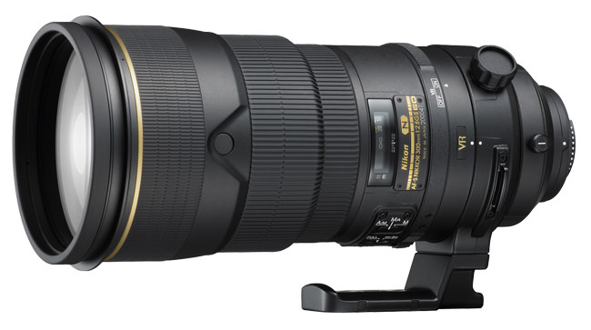
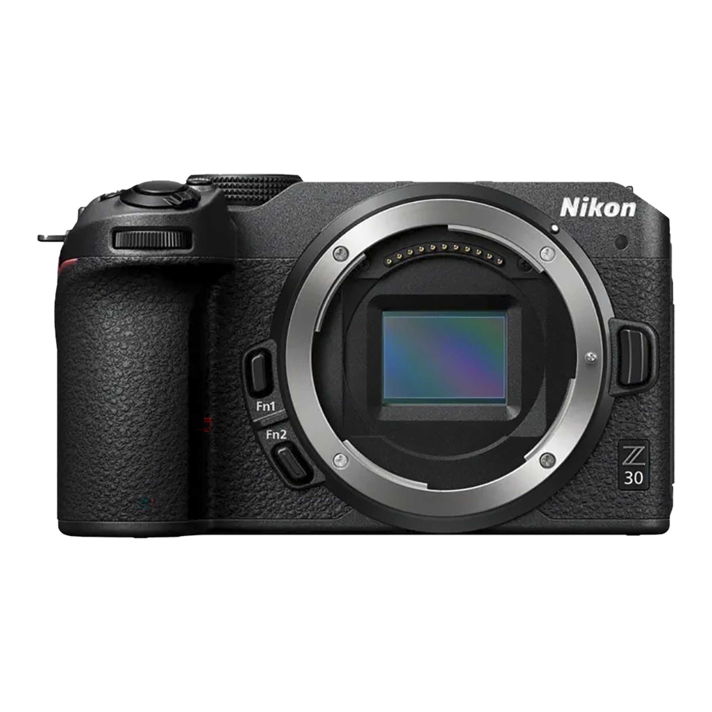
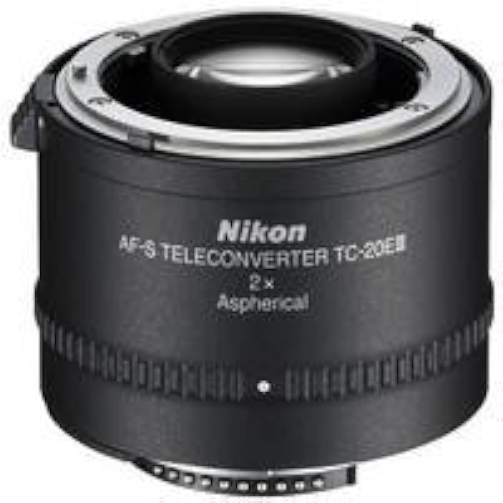
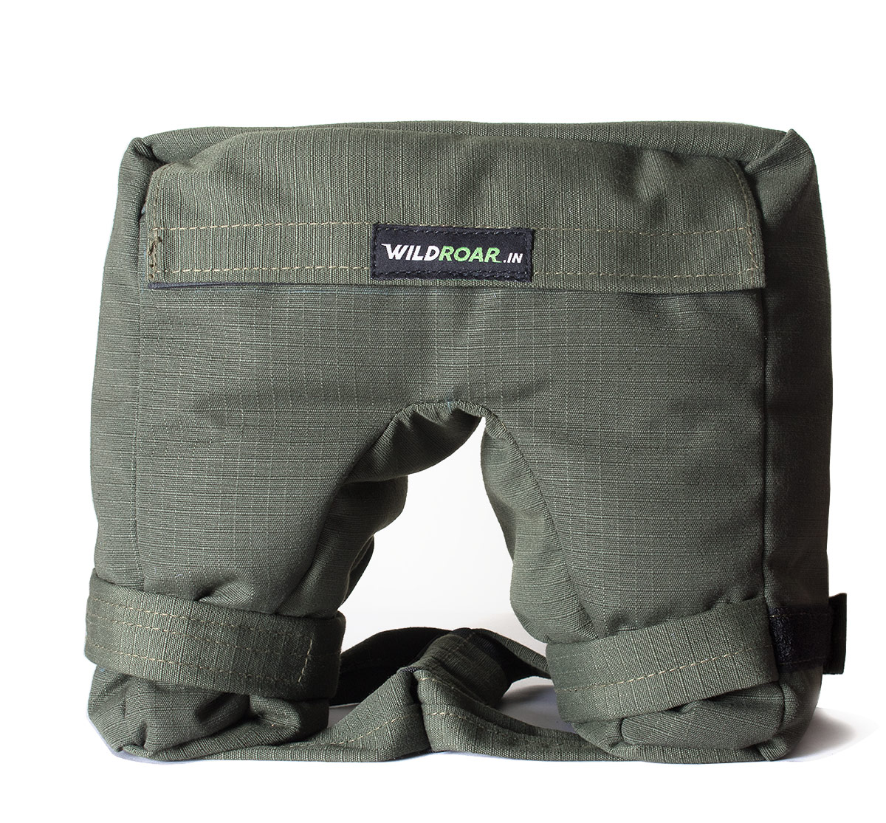

My Gears: The Tools Behind the Lens
Nikon Z6 Mark II

Key Specifications:
- 24.5 MP Full-Frame BSI CMOS Sensor
- EXPEED 6 Image Processor
- 273-Point Hybrid AF System
- 4K UHD Video Recording at 30p
- 5-Axis In-Body Image Stabilization
Nikon 300mm f/2.8 (Adapted Lens)
Key Specifications:
- 300mm Fixed Focal Length
- Maximum Aperture: f/2.8
- Lens Construction: 10 Elements in 9 Groups
- Close Focusing Distance: 2.8m
- Compatible with Nikon F-Mount
Nikon Z30 with 85mm Lens
Key Specifications:
- 20.9 MP APS-C CMOS Sensor
- EXPEED 6 Image Processor
- Hybrid AF with 209 Phase-Detection Points
- 4K UHD Video Recording at 30p
- Vari-Angle Touchscreen LCD
2X Teleconverter
Key Specifications:
- 2X Magnification Factor
- Increases Effective Focal Length by 2x
- Compatible with Nikon F-Mount Lenses
- Retains Autofocus Functionality
Bean Bag
Key Specifications:
- Provides Stable Shooting Platform
- Reduces Camera Shake for Video
- Adjustable for Different Angles
- Portable and Lightweight